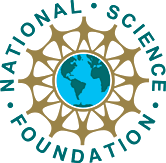

|
|
ACL 2008 Student Research Workshop
June 15-20, 2008, Columbus Ohio
For a list of accepted papers click here.
Call for Papers
1. General Invitation for SubmissionsThe Student Research Workshop is an established tradition at ACL conferences. The workshop provides a venue for student researchers investigating topics in Computational Linguistics and Natural Language Processing to present their work and receive feedback. Participants will have the opportunity to receive feedback from a general audience as well as from panelists; the panelists are experienced researchers who will prepare in-depth comments and questions in advance of the presentation.
We would like to invite student researchers to submit their work to the workshop. Since this workshop is an excellent opportunity to ask for suggestions, to receive useful feedback and to run your ideas by an international audience of researchers, the emphasis of the workshop will be on work in progress. The research being presented can come from any topic area within computational linguistics including, but not limited to, the following topic areas:
- pragmatics, discourse, semantics, syntax and the lexicon
- phonetics, phonology and morphology
- linguistic, mathematical and psychological models of language
- information retrieval, information extraction, question answering
- summarization and paraphrasing
- speech recognition, speech synthesis
- corpus-based language modeling
- multi-lingual processing, machine translation, translation aids
- spoken and written natural language interfaces, dialogue systems
- multi-modal language processing, multimedia systems
- message and narrative understanding systems
2. Submission Requirements
The emphasis of the workshop is on original and unpublished research. The papers should describe original work in progress. Students who have settled on their thesis direction but still have significant research left to do are particularly encouraged to submit their papers.
Since the main purpose of presenting at the workshop is to exchange ideas with other researchers and to receive helpful feedback for further development of the work, papers should clearly indicate directions for future research wherever appropriate. All authors of multi-author papers MUST be students. Papers submitted for this workshop are eligible only if they have not been presented at any other meeting with publicly available published proceedings. Students who have already presented at an ACL/EACL/NAACL Student Research Workshop may not submit to this workshop. They should submit their papers to the main conference instead. It must be indicated if a paper has been submitted to another conference or workshop.
Sponsors:

Important Dates:
- Conference date: June 15-20, 2008
- (The workshop will be held during the main conference)
6. Contact Information
If you need to contact the Co-Chairs of the Student Workshop, please
use:
.
An e-mail sent to this address will be forwarded to all Co-Chairs.
Jan Wiebe (Faculty Advisor)
University of Pittsburgh,
Pittsburgh, Pennsylvania, USA
Ebru Arisoy (Speech Co-Chair)
Bogazici University,
Bebek, Istanbul, Turkey
Wolfgang Maier (NLP Co-Chair)
University of Tuebingen
Tuebingen, Germany
Keisuke Inoue (IR Co-Chair)
Syracuse University
Syracuse, New York, USA
Program Commitee:
- Murat Akbacak, SRI International, USA
- Tanel Alumäe, Tallinn University of Technology, Estonia
- Michiel Bacchiani, Google Inc., USA
- Timothy Baldwin, University of Melbourne, Australia
- Chris Bartels, University of Washington, USA
- Tilman Becker, DFKI Saarbrücken, Germany
- Marine Carpuat, Hong Kong University of Science and Technology, Hong Kong
- Gülşen Cebiroğlu Eryiğit, Istanbul Technical University, Turkey
- Özlem Çetinoğlu, Sabancı University, Turkey
- Mathias Creutz, Nokia Research Center, Finland
- Montse Cuadros, Polytechnic University of Catalonia, Spain
- Anne Diekema, Syracuse University, USA
- Markus Dreyer, Johns Hopkins University, USA
- Kevin Duh, University of Washington, USA
- Koji Eguchi, Kobe University, Japan
- Hakan Erdoğan, Sabancı University, Turkey
- Katja Filippova, EML Research, Germany
- Seeger Fisher, OGI School of Science and Engineering, USA
- Dilek Hakkani-Tür, ICSI, USA
- Dustin Hillard, University of Washington, USA
- Teemu Hirsimäki, Helsinki University of Technology, Finland
- Tatsuya Kawahara, Kyoto University, Japan
- Eric Kow, University of Brighton, UK
- Sandra Kübler, Indiana University, USA
- Giridhar Kumaran, University of Massachusetts Amherst, USA
- Mikko Kurimo, Helsinki University of Technology, Finland
- Staffan Larsson, Göteborg University, Sweden
- Lin-Shan Lee, National Taiwan University, Taiwan
- Kyung-Soon Lee, Chonbuk National University, Korea
- Timm Lichte, University of Tübingen, Germany
- Andrej Ljolje, AT&T Labs - Research, USA
- Berenike Loos, German National Library, Germany
- Robert Luk, The Hong Kong Polytechnic University, Hong Kong
- Lambert Mathias, Johns Hopkins University, USA
- Olena Medelyan, University of Waikato, New Zealand
- Quiozhu Mei, University of Illinois at Urbana-Champaign, USA
- Simon Mille, Pompeu Fabra University, Spain
- Mathias Möhl, Saarland University, Germany
- Kemal Oflazer, Sabancı University, Turkey
- Paul Ogilvie, mSpoke, Inc., USA
- Constantin Orasan, University of Wolverhampton, UK
- Yannick Parmentier, University of Tübingen, Germany
- Thomas Pellegrini, LIMSI, France
- Adam Przepiórkowski, Institute of Computer Science, Polish Academy of Sciences, Poland
- Janne Pylkkönen, Helsinki University of Technology, Finland
- Georg Rehm, University of Tübingen, Germany
- Brian Roark, OGI School of Science and Engineering, USA
- Haşim Sak, Boğaziçi University, Turkey
- Murat Saraçlar, Boğaziçi University, Turkey
- Ruhi Sarikaya, IBM Watson Research Center, USA
- Oliver Schonefeld, University of Bielefeld, Germany
- Izak Shafran, OGI School of Science and Engineering, USA
- Anders Søgaard, University of Potsdam, Germany
- Richard Sproat, University of Illinois at Urbana-Champaign, USA
- Yael Sygal, University of Haifa, Israel
- Cüneyd Tantuğ, Istanbul Technical University, Turkey
- Gökhan Tür, SRI International, USA
- Suzan Verberne, University of Nijmegen, The Netherlands
- Ellen Voorhees, National Institute of Standards and Technology, USA
- Christopher White, Johns Hopkins University, USA
- Hans Friedrich Witschel, University of Leipzig, Germany
|